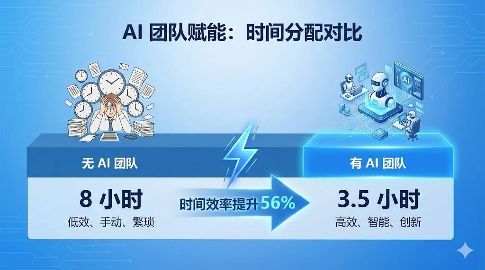
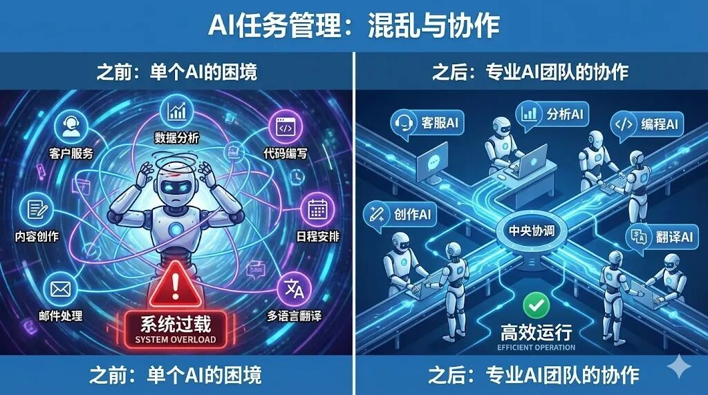
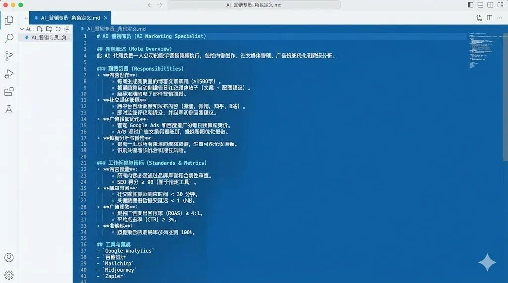
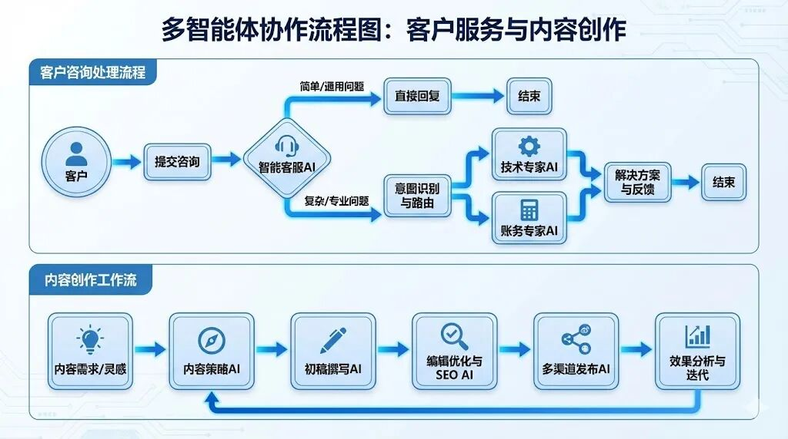
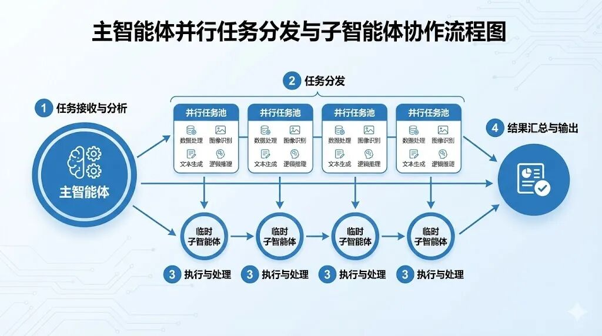
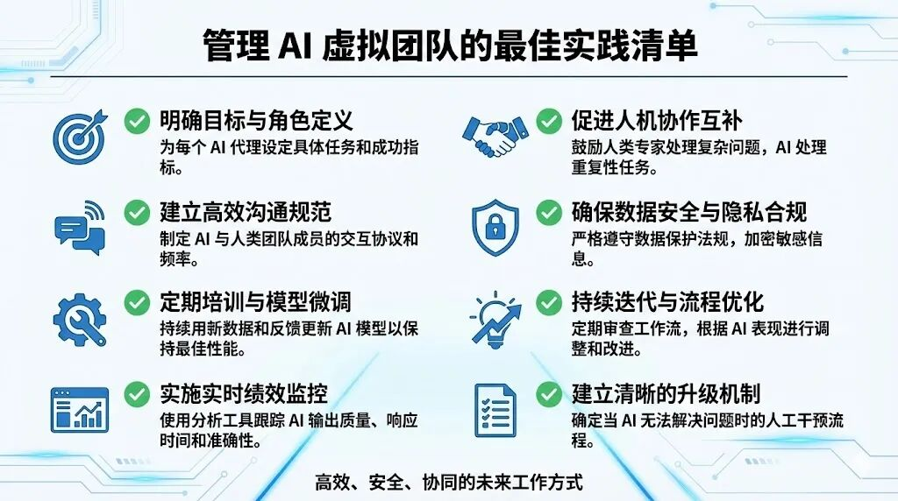

如何用OpenClaw多Agent减少上下文切换成本，提升工作质量
🎁 福利预告
本文最后可领取：
1. ✅ 一人公司AI团队配置模板（完整openclaw.json + 6个SOUL.md模板）
2. ✅ Telegram Bot创建步骤详解
3. ✅ 常用命令速查表 + 故障排查指南
📑 文章目录
😱 从混乱到有序
🧠 核心原理：AI也能组建团队
🏗️ 第一步：设计你的虚拟团队架构
👷 第二步：使用 openclaw agents add 创建Agent
🔗 第三步：设置路由绑定
⚡ 第四步：临时调用子Agent
❓ 常见问题与最佳实践
🎁 领取福利

😱 从混乱到有序：我的真实困境
2025年底，我开始深度使用 OpenClaw。
一开始，只有一个 main Agent。
但很快我发现问题：
场景1：代码问题混杂在日常对话里
1. 刚跟AI聊完地铁项目会议记录
2. 转头问"帮我写个Python脚本处理Excel"
3. AI还在"项目经理"模式，代码质量堪忧
4. 更要命的是：代码上下文污染了会议记录
场景2：会议纪要和技术写作冲突
1. 晨会记录需要简洁、结构化
2. 技术文章需要深度、有见解
3. 同一个AI，频繁切换角色，两边都做不好
场景3：研究任务打断工作流
1. 写技术文章时，需要查资料
2. 查完资料，AI已经"忘记"刚才的写作思路
3. 每次都要重新说明背景，效率极低
💥 问题总结：单Agent vs 多Agent
转折点：为什么不用多个Agent？
我意识到：不是AI不够强，是我的组织方式不对。
就像公司不会让一个人同时做：
1. 秘书（会议记录）
2. 程序员（写代码）
3. 作者（写文章）
4. 研究员（查资料）
每个岗位都需要专业的人。AI也是。
于是我用 openclaw agents add 命令，创建了5个专业Agent：
code-helper - 代码助手（专注编程）
meeting-secretary - 会议秘书（专注记录）
project-assistant - 项目助手（专注项目管理）
tech-writer - 技术写作（专注文章）
researcher - 研究员（专注资料收集）
效果：
1. ✅ 代码质量提升：code-helper 专注编程，不再受其他上下文干扰
2. ✅ 会议纪要标准化：meeting-secretary 记住格式，每次输出一致
3. ✅ 写作效率翻倍：tech-writer 保持创作思路，不受其他任务打断
4. ✅ 研究更深入：researcher 专注查资料，输出更专业
更重要的是：我不再需要每次都重新说明背景。
这篇文章，教你如何用 openclaw agents add 命令，搭建自己的AI虚拟团队。
🧠 核心原理：AI也能组建团队
OpenClaw 的多Agent功能，本质上就是：一个服务器，多个专业大脑。
传统方式 vs 虚拟团队方式
为什么需要多个Agent？
1. 专业分工
1. 代码Agent专注编程，保持代码上下文
2. 写作Agent专注内容，保持创作思路
3. 会议Agent专注记录，保持格式统一
4. 一个AI无法同时保持多种专业状态
2. 上下文隔离
1. 代码上下文不会污染会议记录
2. 写作思路不会被代码问题打断
3. 切换任务 = 切换Bot，无需清空上下文
3. 减少说明成本
1. 传统方式：每次切换任务都要重新说明"你是XXX，你要做XXX"
2. 多Agent方式：每个Agent记住自己的职责，直接开始工作
4. 成本优化
1. 简单任务用便宜模型（日常对话、快速响应）
2. 复杂任务用高级模型（深度分析、创意写作）
3. 按需选择，不浪费算力
⚠️ 注意：多Agent不是万能的
1. ✅ 适合：长期运行的专业化服务（客服、写作、代码审查）
2. ❌ 不适合：需要频繁切换的临时任务（即时对话）
3. 💡 核心价值：减少上下文切换成本，而非并行处理

🏗️ 第一步：设计你的虚拟团队架构
在动手配置前，先问自己：我有哪些重复性高的任务类型？
团队设计三步法
Step 1: 列出你的任务清单
拿出纸笔，记录一周内的所有任务，按技能类型分类：
关键发现：
1. ❌ 不同任务需要不同的上下文
2. ❌ 频繁切换会导致AI"忘记"之前的思路
3. ❌ 同一个AI无法同时保持多种专业状态
Step 2: 定义Agent岗位
根据任务类型，设计你的虚拟团队：
我的实际团队架构（6个Agent）：
为什么是这6个？
main：需要一个总控，处理杂事和协调
code-helper：代码需要独立上下文，避免污染其他对话
meeting-secretary：会议纪要格式固定，需要专业化
project-assistant：项目背景复杂，需要持续记忆
tech-writer：写作需要灵感连贯，不能被打断
researcher：研究需要深度专注，收集大量资料
Step 3: 规划渠道绑定
每个Agent通过不同的Telegram Bot提供服务：
code-helper → @xxx_code_bot （代码Bot）
meeting-secretary → @xxx_meeting_bot （会议Bot）
project-assistant → @xxx_project_bot （项目Bot）
tech-writer → @xxx_tech_bot （写作Bot）
researcher → @xxx_research_bot （研究Bot）
好处：
1. ✅ 不同Bot对应不同场景，物理隔离
2. ✅ 想写代码就找 code-helper，不用在 main 里切换上下文
3. ✅ 每个Agent保持专业状态，不会"串台"
👷 第二步：使用 openclaw agents add 创建Agent
现在开始"招聘"你的AI员工。最快的方法是使用向导命令。
方法1：使用向导命令（推荐）
openclaw agents add code-helper
# 创建 meeting-secretary Agent
openclaw agents add meeting-secretary
# 创建 project-assistant Agent
openclaw agents add project-assistant
# 创建 tech-writer Agent
openclaw agents add tech-writer
# 创建 researcher Agent
openclaw agents add researcher
这个命令会自动：
1. ✅ 创建独立的工作区（~/.openclaw/workspace-）
2. ✅ 创建状态目录（~/.openclaw/agents/）
3. ✅ 生成基础配置文件
4. ✅ 更新 ~/.openclaw/openclaw.json
方法2：手动编辑配置文件
如果你需要精细控制，可以直接编辑 ~/.openclaw/openclaw.json。
核心配置结构：
agents: {
list: [
{ id: "main" }, // 默认主Agent
{
id: "code-helper",
name: "代码助手",
workspace: "工作区路径",
agentDir: "状态目录路径",
model: "zai/glm-5", // 使用的模型
},
// ... 其他5个Agent
],
},
}
⚠️ 完整配置文件较长，包含：
1. 6个Agent的完整配置
2. Telegram Bot绑定设置
3. 路由规则配置
📥 完整配置文件模板：
关注公众号后私信 "AI团队" 即可获取：
1. ✅ 完整 openclaw.json 配置文件（可直接使用）
2. ✅ 6个Agent的SOUL.md岗位职责模板
3. ✅ Telegram Bot创建步骤详解
为每个Agent配置专属人设
在每个Agent的工作区创建 SOUL.md（定义人设）：
示例：code-helper 的 SOUL.md
## 核心职责
- 编写高质量代码（Python、JavaScript、Shell等）
- 调试和修复bug
- 代码审查和优化
## 编码标准
- 代码风格：简洁、可读、符合规范
- 注释：关键逻辑必须有注释
💡 SOUL.md的作用：
1. 让Agent记住自己的专业领域
2. 标准化输出格式
3. 保持一致的工作质量
📥 完整的SOUL.md模板（6个Agent）：
关注公众号后私信 "AI团队" 即可获取完整模板。
验证Agent创建成功
openclaw agents list
# 输出示例：
# ID NAME WORKSPACE
# main main ~/.openclaw/workspace
# code-helper code-helper ~/.openclaw/workspace-code-helper
# meeting-secretary meeting-secretary ~/.openclaw/workspace-meeting-secretary
# project-assistant project-assistant ~/.openclaw/workspace-project-assistant
# tech-writer tech-writer ~/.openclaw/workspace-tech-writer
# researcher researcher ~/.openclaw/workspace-researcher

🔗 第三步：设置路由绑定
Agent创建好了，现在需要设置如何访问它们。
路由绑定原理
每个 Telegram Bot 账号绑定到一个 Agent：
@xxx_code_bot → code-helper Agent
@xxx_meeting_bot → meeting-secretary Agent
@xxx_project_bot → project-assistant Agent
@xxx_tech_bot → tech-writer Agent
@xxx_research_bot → researcher Agent
效果：
1. 在 @xxx_code_bot 里对话 → 自动路由到 code-helper
2. 在 @xxx_tech_bot 里对话 → 自动路由到 tech-writer
3. 每个Bot保持独立上下文，不会混淆
配置绑定规则
编辑 ~/.openclaw/openclaw.json，添加 bindings 部分：
核心结构：
// main Agent 绑定到主Bot
{
agentId: "main",
match: {
channel: "telegram",
accountId: "main",
},
},
// code-helper 绑定到代码Bot
{
agentId: "code-helper",
match: {
channel: "telegram",
accountId: "xxx_code_bot",
},
},
// ... 其他4个Agent绑定
]
⚠️ 完整绑定配置包含：
1. 6个Agent的完整路由规则
2. Telegram Bot账号配置
3. Bot Token设置
📥 完整绑定配置模板：
关注公众号后私信 "AI团队" 即可获取：
1. ✅ 完整的 bindings 配置代码
2. ✅ Telegram Bot创建步骤（图文详解）
3. ✅ Bot Token配置说明
配置 Telegram Bot 账号
快速步骤：
在 Telegram 搜索 @BotFather
发送 /newbot 创建新Bot
按提示设置名称和用户名
获得 Token（格式：123456789:ABCdefGHI...）
重复创建6个Bot，为每个Agent分配一个Bot。
📥 详细步骤（含截图）：
关注公众号后私信 "AI团队" 即可获取完整的Telegram Bot创建教程。
验证绑定成功
openclaw gateway restart
# 查看绑定状态
openclaw agents list --bindings
# 输出示例：
# ID BINDINGS
# main telegram:main
# code-helper telegram:xxx_code_bot
# meeting-secretary telegram:xxx_meeting_bot
# project-assistant telegram:xxx_project_bot
# tech-writer telegram:xxx_tech_bot
# researcher telegram:xxx_research_bot
测试Agent路由
在 Telegram 中测试：
你：帮我写个Python脚本
code-helper：（响应，专业编程语气）
2. 打开 @xxx_tech_bot
你：帮我写一篇技术文章
tech-writer：（响应，深度写作语气）
3. 回到 @xxx_code_bot
你：刚才的代码有问题
code-helper：（记得刚才的代码上下文）
关键点：
1. ✅ 每个Bot对应一个专业Agent
2. ✅ 切换Bot就是切换Agent
3. ✅ Agent之间上下文独立，不会混淆

⚡ 第四步：临时调用子Agent（专家支持）
除了固定的6个Agent，你还可以临时调用子Agent处理一次性任务。
什么是子Agent？
子Agent是临时的专家Agent，特点：
1. ✅ 用完即走，不占用固定资源
2. ✅ 可以并行处理多个任务
3. ✅ 可以使用不同的模型
4. ✅ 完成后自动发送结果到你的聊天
实战场景
场景1：临时技术攻关
帮我分析这个复杂的算法问题，我需要深度思考
main Agent：
这是一个复杂问题，我调用专家来处理
/subagents spawn expert "深度分析算法问题：XXX" --model zai/glm-5
（30秒后）
【专家子Agent】分析完成：
这个算法的时间复杂度是O(n²)，建议优化为...（详细分析）
场景2：并行处理多个文件
帮我分析这5个Python文件的代码质量
main Agent：
好的，我并行调用5个代码审查专家
/subagents spawn code-reviewer "审查文件1" --model zai/glm-5
/subagents spawn code-reviewer "审查文件2" --model zai/glm-5
/subagents spawn code-reviewer "审查文件3" --model zai/glm-5
/subagents spawn code-reviewer "审查文件4" --model zai/glm-5
/subagents spawn code-reviewer "审查文件5" --model zai/glm-5
（1分钟后，5个结果陆续返回）
【代码审查1】文件1的问题：...
【代码审查2】文件2的问题：...
...
场景3：临时研究任务
我需要写一篇关于Rust语言的文章，先帮我收集资料
tech-writer：
好的，我调用研究员来收集
/subagents spawn researcher "研究Rust语言的核心特性、应用场景、学习路径"
（2分钟后）
【研究员子Agent】资料收集完成：
1. Rust的核心特性：...
2. 主要应用场景：...
3. 学习资源：...
子Agent命令
/subagents spawn <agentId> "任务描述"
# 指定模型
/subagents spawn expert "复杂任务" --model zai/glm-5
# 查看运行中的子Agent
/subagents list
# 向子Agent发送补充指令
/subagents steer <run-id> "补充要求"
# 停止子Agent
/subagents kill <run-id>
子Agent vs 固定Agent
我的使用策略：
1. 固定Agent：日常高频任务（编程、会议、写作）
2. 子Agent：临时复杂任务（代码审查、深度研究、批量处理）

❓ 常见问题与最佳实践
Q1: AI团队会不会抢我的工作？
A: 不会。AI团队处理的是重复性、标准化的工作，让你专注于：
1. 战略决策
2. 创意的最后把关 
3. 深度客户关系
4. 线下交付
AI是你的员工，不是你的替代者。
Q2: 如何控制成本？
A: 成本优化策略：
1. 简单任务用便宜模型
- 记录、运营：GLM-4、Claude Haiku
2. 复杂任务用高级模型
- 内容、分析：Claude Sonnet、Claude Opus
3. 临时任务用子Agent
- 按需调用，用完即走
4. 设置并发限制
- 避免同时运行太多Agent
B：预估成本：
- 每月API成本：约200元
- 相当于：1个全职助理1天的工资
- 但提供：5个专业岗位的产出
Q4: 多个Agent会不会混乱？
A: 不会，因为：
- ✅ 每个Agent有独立的工作区和记忆
- ✅ 路由绑定明确，消息不会"串台"
- ✅ 你可以随时查看每个Agent的工作记录
- ✅ Agent之间默认不通信（除非你启用）
🎁 领取福利
感谢阅读！关注公众号后，私信 "AI团队"即可获取：
📦 一人公司AI团队配置模板：
✅ 完整 openclaw.json 配置文件（6个Agent，可直接使用）
✅ 6个SOUL.md岗位职责模板
✅ Telegram Bot创建步骤详解
✅ 常用命令速查表（Agent管理+Gateway操作）
✅ 故障排查指南（常见问题+解决方案）
📱 获取方式：
1. 扫码关注公众号
2. 发送私信："AI团队"
3. 自动获取完整配置模板
往期文章：